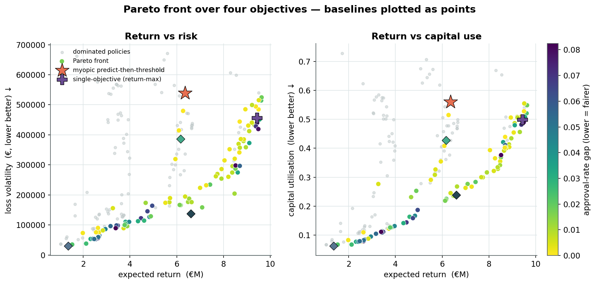
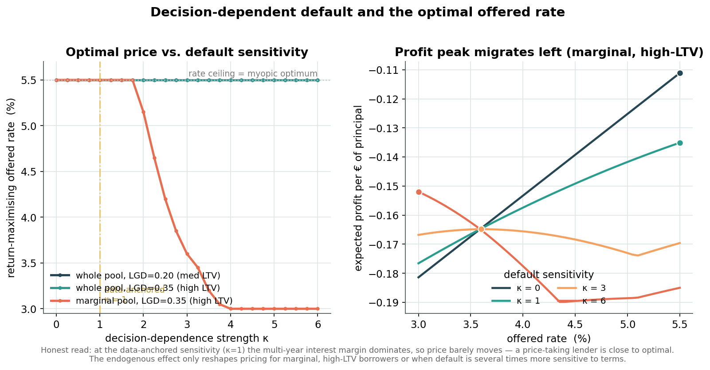
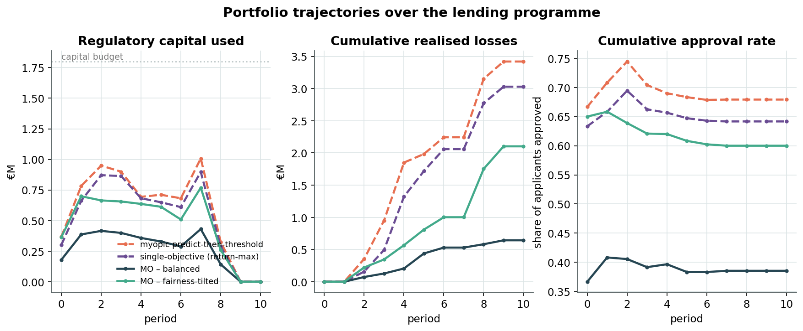
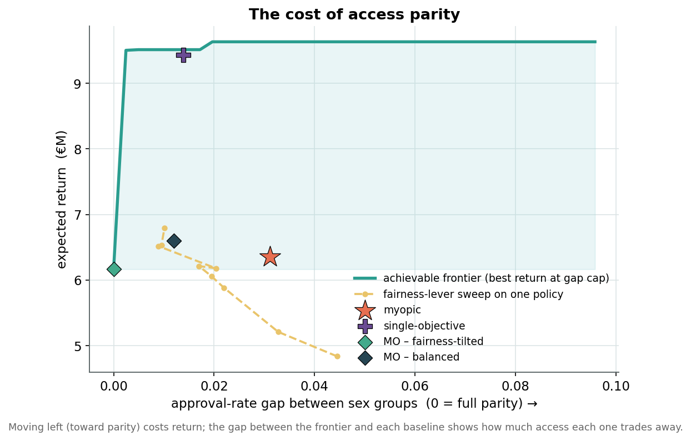
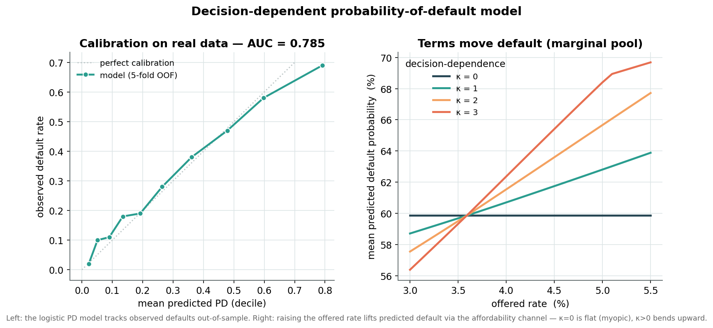

A lender that sets a loan's terms doesn't merely select a borrower of fixed riskiness — it changes that riskiness. A lower rate improves affordability and lowers default; it also cuts margin. So default probability is endogenous to the decision.
The textbook pipeline — predict default, then decide — freezes the risk estimate and optimises against it. This project models the feedback explicitly and optimises across four competing objectives over time, then asks plainly: do the decisions actually change, and by how much?
Estimate a probability of default as though terms were fixed, threshold on it, price at the market rate, and lend. The decision never feeds back into the estimate it was built on.
It is simple, auditable, and — as the results show — surprisingly hard to beat on the one axis it optimises. But it is blind to its own influence.
The rate offered moves the borrower's payment burden, and payment burden moves default — through a coefficient estimated from real defaults, not assumed. Cheaper credit is safer credit, up to a margin cost.
Because the action changes the outcome distribution, this is a decision-dependent (endogenous) uncertainty problem, not a prediction problem with a decision bolted on.
Offered terms feed an affordability channel that moves predicted default. κ=0 reproduces the myopic, terms-independent assumption; κ>0 bends default upward with the rate. The sensitivity is a real estimated coefficient.
Applicants arrive over many periods under a finite capital budget. Approving ties up regulatory capital until a loan resolves; realised losses erode the capital for later periods; retained interest rebuilds it. Pacing has value.
Return, loss volatility, regulatory-capital usage and approval-rate parity genuinely conflict. The output is a Pareto front, not a single "optimal" policy — and the baselines are points on it.
A transparent sampling-based solver (random search + a hand-written NSGA-II refinement, no RL frameworks) maps the four-objective trade-off. The two baselines land as single points on it.

As default grows more responsive to terms (κ), the return-maximising rate bends below the ceiling a myopic lender would charge — the profit peak migrates left.

At the data-anchored sensitivity (κ=1) this effect is second-order for pricing: a multi-year interest margin dwarfs a one-off default loss, so a price-taking lender is close to optimal on price. It only bites for marginal, high-LTV borrowers or stronger feedback. Reporting where the simpler approach already wins is the point, not a footnote.
Capital usage, cumulative losses and approval rate, period by period. Greedy baselines accumulate losses; paced multi-objective policies stay capital-efficient and release capital in the wind-down.

How much expected return you give up to close the approval-rate gap between groups. Full parity is reachable here at a real but bounded cost.

A logistic PD model, calibrated out-of-sample on the real data, with a decision-dependent head: the offered rate genuinely moves predicted default through affordability.

Nothing is fabricated. Two distinct real sources, for two distinct jobs — borrower behaviour and Irish portfolio scale.
pip install -r requirements.txt
python run_all.py # ~50s → figures/ + results table
Deterministic to the decimal: all randomness flows through explicitly seeded generators and the PD model uses unshuffled cross-validation. Each figure is also runnable on its own, e.g. python -m experiments.run_pareto.